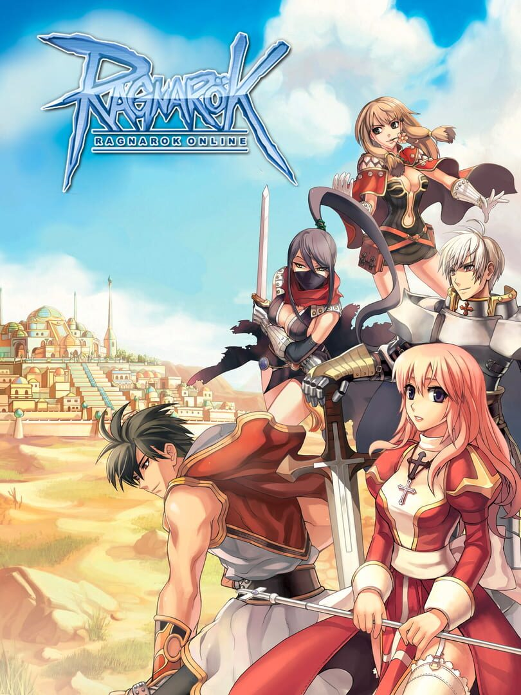

Ragnarok
Ragnarok
Details
|  | |
| Playtime | 46m 0s |
| Last Activity | Never |
| Added | 12/30/2023 6:40:46 |
| Modified | 12/31/2023 8:26:56 |
| Completion Status | Played |
| Library | Steam |
| Source | Steam |
| Platform | PC (Windows) |
| Release Date | 8/31/2002 |
| Community Score | 77 |
| Critic Score | |
| User Score | |
| Genre | Role-playing (RPG) |
| Developer | GRAVITY |
| Publisher | GRAVITY |
| Feature | Massively Multiplayer Online (MMO) |
| Links | Official Wikipedia Wikia Steam Twitch |
| Tag | |
Description
In the world of Rune Midgard, it was a time of strife between the Gods, Humans and demons...
Battle weary from the long war's carnage, the factions entered into an uneasy truce. The truce grew into a fragile peace that lasted for a thousand years.
As the memory of that great war faded into legend, the humans began to fall back into the corruption, selfishness and arrogance that they had once risen above.
Breaking this time of tranquility is the sudden strange howl that tore through the boundaries dividing the Gods, Humans and Demons. Once peaceful creatures began to attack villages, and violent earthquakes ripped whole continents apart.
Sinister corporations to the north engage in twisted genetic experiments and the recent discovery of a pan dimensional portal has opened up amazing new adventures.
With the Ragnarok threatening to destroy Rune Midgard, adventurers are needed to step up and battle against the forces of Chaos. Join your friends in exploring the world and build your own legend in RO!
*Steam login designed for new accounts registered through the Steam service.
One of the first things noticed about RO is that the character and player models are sprite based while the towns, fields and dungeons are polygonal. This gives RO a unique visual style that hearkens back to the golden age of console RPGs.
Extensive PVE and PVP content
Whether you want to hunt down the toughest monsters in Rune Midgard or engage in our bi-weekly Guild vs. Guild War of Emperium, Ragnarok Online has over 10 years worth of content, including new maps, new classes, challenging instanced dungeons and PVP arenas and Battlegrounds.
Extensive class system
Every player starts out as a novice class character, from there you choose a class. Multiple branching paths when you level up adds up to a total of 32 classes, each with their own specific abilities. From the hard-hitting Monk to the Robot riding Mechanic, there is a class for every type of player.
Make your character your own
Character's skills stats are completely customizable with each choice ultimately changing the direction a character will take. Combinated with many different job choices this allows characters to be unique adventurers in the world of Ragnarok Online.
Forge, brew and sell
Merchant class characters can open shops, and put items up for sale in a totally player driven economy. In addition, certain classes can craft high level equipment and consumables.
Weekly events and updates
RO is updated every week with fun new things for players to do, and we have major quests and events added every month.
Passionate Community
The RO fanbase was established in the early 2000s and we have many players who have been with us since the game's early days. We have quests, in-game art and events that come directly from our extremely creative community.
Battle weary from the long war's carnage, the factions entered into an uneasy truce. The truce grew into a fragile peace that lasted for a thousand years.
As the memory of that great war faded into legend, the humans began to fall back into the corruption, selfishness and arrogance that they had once risen above.
Breaking this time of tranquility is the sudden strange howl that tore through the boundaries dividing the Gods, Humans and Demons. Once peaceful creatures began to attack villages, and violent earthquakes ripped whole continents apart.
Sinister corporations to the north engage in twisted genetic experiments and the recent discovery of a pan dimensional portal has opened up amazing new adventures.
With the Ragnarok threatening to destroy Rune Midgard, adventurers are needed to step up and battle against the forces of Chaos. Join your friends in exploring the world and build your own legend in RO!
*Steam login designed for new accounts registered through the Steam service.
Key Features
Hybrid 2D/3D GraphicsOne of the first things noticed about RO is that the character and player models are sprite based while the towns, fields and dungeons are polygonal. This gives RO a unique visual style that hearkens back to the golden age of console RPGs.
Extensive PVE and PVP content
Whether you want to hunt down the toughest monsters in Rune Midgard or engage in our bi-weekly Guild vs. Guild War of Emperium, Ragnarok Online has over 10 years worth of content, including new maps, new classes, challenging instanced dungeons and PVP arenas and Battlegrounds.
Extensive class system
Every player starts out as a novice class character, from there you choose a class. Multiple branching paths when you level up adds up to a total of 32 classes, each with their own specific abilities. From the hard-hitting Monk to the Robot riding Mechanic, there is a class for every type of player.
Make your character your own
Character's skills stats are completely customizable with each choice ultimately changing the direction a character will take. Combinated with many different job choices this allows characters to be unique adventurers in the world of Ragnarok Online.
Forge, brew and sell
Merchant class characters can open shops, and put items up for sale in a totally player driven economy. In addition, certain classes can craft high level equipment and consumables.
Weekly events and updates
RO is updated every week with fun new things for players to do, and we have major quests and events added every month.
Passionate Community
The RO fanbase was established in the early 2000s and we have many players who have been with us since the game's early days. We have quests, in-game art and events that come directly from our extremely creative community.